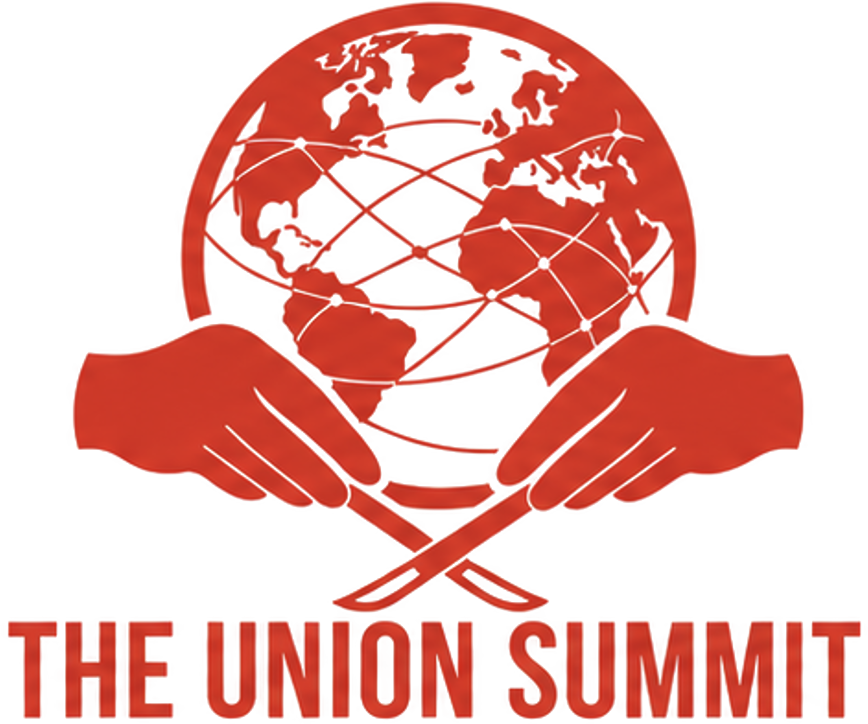

The Union Summit convenes surgeons, educators, NGO leaders, industry innovators, and policymakers to develop actionable strategies for advancing surgical equity in underserved communities around the world.
Global plastic surgery efforts have often developed in parallel rather than in partnership — across institutions, specialties, NGOs, industry, and geographic regions. The Union Summit is a true forum dedicated to bringing those leaders together.
Foster collaboration among surgeons, NGOs, academic institutions, and governments.
Elevate evidence-based and locally sustainable models of care.
Promote ethical and impactful global surgery programs.
Drive research, policy, and innovation efforts addressing unmet surgical needs.